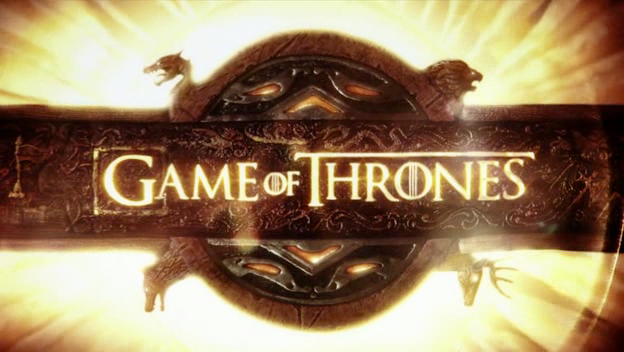

Game of Thrones

Sinopse
Game of Thrones é uma série de televisão baseada nos livros de George R. R. Martin. A trama gira em torno da disputa pelo Trono de Ferro no continente fictício de Westeros, envolvendo diversas famílias nobres, intrigas políticas e elementos fantásticos.
Principais Personagens
- Jon Snow
- Daenerys Targaryen
- Tyrion Lannister
- Cersei Lannister
- Arya Stark
Curiosidades
A série foi exibida entre 2011 e 2019, tornando-se um fenômeno mundial. Recebeu dezenas de prêmios e é conhecida por suas reviravoltas e personagens complexos.